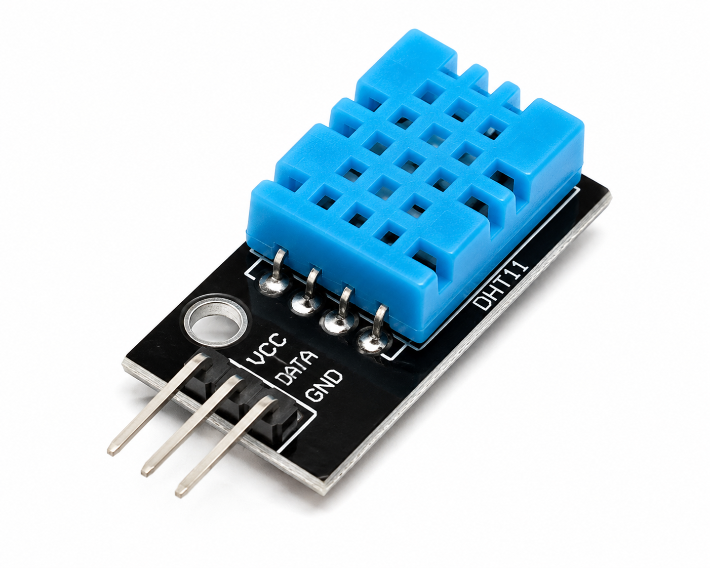

To develop a humidity-based
warning system using Arduino UNO,
a humidity sensor, a 16×2 I²C LCD
and a buzzer.
The intended system displays
humidity and activates an
audible warning when the
calculated value reaches
or exceeds 50%.
Sensor Compatibility:
The supplied sketch requires
an analog voltage on A0.
A DHT11 provides a digital
humidity signal and cannot
be read using the supplied
analogRead() calculation.
Therefore, the original
sketch needs correction
before this can function as
a DHT11 humidity experiment.
About the Experiment
The Humidity-Based Warning System
is intended to demonstrate
environmental monitoring
and automatic warning generation
using Arduino UNO.
The source describes
a humidity sensor connected
to Arduino analog pin A0.
Arduino reads an analog value
and converts it to an
estimated voltage.
The supplied program then
applies a mathematical formula
and labels the result
as a humidity percentage.
The calculated value
is displayed on a
16×2 I²C LCD.
When the calculated value
reaches or exceeds
the programmed limit of 50,
the LCD displays
HIGH! BUZZER ON.
The buzzer receives
a 1000 Hz tone signal.
When the calculated value
is below 50,
the LCD displays
Status: NORMAL and
the buzzer is switched OFF.
Serial Monitor also
displays the calculated
value and buzzer status
at 9600 baud.
Important Technical Limitation:
The supplied sensor image
is named DHT11.png,
but the sketch does not
use a DHT11 library
or digital humidity reading.
The expression
(voltage - 0.5) * 100.0
is not a valid formula
for calculating relative
humidity from a DHT11.
The resulting value
must not be treated
as measured relative
humidity until the
sensor and sketch
are corrected.
Components Required
Arduino UNO R3 (×1)
Main controller
for sensor readings,
LCD display and
buzzer operation.

DHT11 Humidity Sensor (×1)
The sensor depicted
in the source component
list; requires different
reading code.
16×2 I²C LCD (×1)
Displays the
calculated reading
and warning status.
Buzzer (×1)
Provides an
audible warning
when the programmed
threshold is reached.
Breadboard (×1)
Used to assemble
the experiment
connections.
Jumper Wires
Used for electrical
connections between
the components.
Libraries in the Original Sketch:
Wire.h
LiquidCrystal_I2C.h
To use a real DHT11,
an appropriate DHT sensor
library and digital
data-reading code
are additionally required.
Confirm the exact
DHT11 module version
and its electrical
requirements before wiring.
Circuit Connections
Sensor Connections — As Specified in Source
Component
Terminal
Arduino UNO Connection
Sensor
VCC
5V
Sensor
DATA / OUT
A0
Sensor
GND
GND
Sensor Wiring Clarification:
This table preserves
the connections provided
in the original source.
Connecting a DHT11
data pin to A0 does not
make it an analog
humidity sensor.
A0 can be used
as a digital input,
but the sketch must
use the correct DHT11
digital protocol.
16×2 I²C LCD Connections
LCD Terminal
Arduino UNO Connection
VCC
5V, if module is compatible
GND
GND
SDA
A4
SCL
A5
Buzzer Connections
Buzzer Terminal
Arduino UNO Connection
Positive (+)
D8, if suitable for direct pin drive
Negative (−)
GND
Original Pin Summary:
Sensor DATA / OUT → A0
LCD SDA → A4
LCD SCL → A5
Buzzer Positive → D8
Common Ground → GND
LCD I²C Address → 0x27
The source assumes
a compatible 5V LCD module.
Verify the actual LCD
backpack, address and
LiquidCrystal_I2C library.
Verify the buzzer's
operating current.
A buzzer that exceeds
safe GPIO current
requires a suitable driver.
Circuit Diagram
Approved circuit diagram PNG pending.
Verify the sensor type and
corresponding code before
adding the final circuit image.
Working Principle
Arduino UNO Starts
↓
Initialize LCD and Buzzer
↓
Read Analog Input A0
↓
Convert ADC Value into Voltage
↓
Apply the Source Calculation Formula
↓
Display Calculated Value on LCD
↓
Compare Value with Threshold 50
↓
Value Below 50 → NORMAL, Buzzer OFF
↓
Value 50 or Above → HIGH, Buzzer ON
↓
Print Reading and Status to Serial Monitor
↓
Repeat After 500 ms
Analog Input Reading
The source uses
analogRead(A0) to obtain
a value between
0 and 1023.
The value is converted
to voltage using a
5V reference.
Voltage Formula:
voltage =
sensorValue × 5.0 / 1023.0
Source Calculation
The sketch uses the
following expression
to calculate a variable
called humidity.
Original Expression:
humidity =
(voltage − 0.5) × 100.0
This expression is
not a valid humidity
conversion for a DHT11.
Threshold Comparison
The calculated value
is compared against
a constant of 50.0.
Values below 50
select the NORMAL
program branch.
Values of 50 or higher
select the HIGH
warning branch.
LCD and Buzzer Operation
The first LCD row
displays the calculated
value with a percent sign.
The second LCD row
displays NORMAL
or HIGH status.
When the HIGH branch
is active, the sketch
calls tone() with
a frequency of 1000 Hz.
When the NORMAL branch
is active, noTone()
turns the buzzer OFF.
Programmed Threshold
50
Below Threshold
NORMAL · Buzzer OFF
At / Above Threshold
HIGH · Buzzer ON
Update Interval
500 ms
Measurement Warning:
The operating logic
above describes what
the supplied code does.
The displayed percentage
is not verified relative
humidity when the
listed sensor is DHT11.
Procedure
Place Arduino UNO,
the humidity sensor,
LCD, buzzer and
breadboard on a
stable working surface.
Confirm the exact
sensor model and
its pin configuration.
Check whether the
sensor provides
a digital data signal
or an analog output.
For the listed DHT11,
use an appropriate
digital humidity-reading
program rather than
the supplied analog formula.
Connect the sensor VCC
to its rated supply.
Connect sensor GND
to Arduino GND.
Connect the sensor
data output to the
pin selected in the
verified sensor code.
Connect the LCD
VCC to a compatible
supply.
Connect LCD GND
to Arduino GND.
Connect LCD SDA
to Arduino A4.
Connect LCD SCL
to Arduino A5.
Connect buzzer positive
to D8 if the buzzer
is suitable for
direct pin drive.
Connect buzzer negative
to GND.
Verify all wiring
and electrical ratings.
Open Arduino IDE.
Install a compatible
LiquidCrystal_I2C library.
If using a DHT11,
install a suitable
DHT sensor library
and update the sketch
to read digital humidity.
Create a sketch named
Humidity_Based_Warning_System.ino.
Review the original
program in
Explore the Code.
Use the original sketch
only for studying
its analog-value
threshold logic;
correct the sensor
reading before real
humidity testing.
Select Arduino Uno
and the correct
communication port.
Verify and upload
a sensor-compatible
Arduino program.
Open Serial Monitor
at 9600 baud.
Observe the LCD
reading and status.
Test the warning
threshold using
valid sensor readings
or controlled test data.
Confirm that the
buzzer activates
when the measured
humidity reaches
the configured threshold
in the corrected program.
Arduino Experiment · Code Review
Explore the Code
Humidity-Based Warning System ·
Select a step to understand
the original Arduino program.
Humidity_Based_Warning_System.ino
Understand it step by step
Select a step to highlight
its matching lines and
read an explanation.
Explore more: DHT11 Compatibility
A DHT11 transmits
digital temperature
and humidity data.
analogRead() does not
decode the DHT11
communication protocol.
A corrected experiment
needs a supported
digital reading method.
Explore more: Threshold Logic
The if statement
compares the calculated
reading against 50.
If the number reaches
or exceeds 50,
tone() activates
the buzzer signal.
Otherwise,
noTone() turns
the signal off.
Check Your Understanding
Which pin is used
for the original
analog input?
Which pin controls
the buzzer?
What is the
programmed threshold?
Which LCD address
is used?
What is the
update interval?
Can analogRead(A0)
directly measure
DHT11 humidity?
A0
D8
50
0x27
500 ms
No, DHT11 uses a digital protocol
Try it:
Identify the difference
between an analog voltage
measurement and a digital
humidity sensor reading.
Explain why the DHT11
requires a different
Arduino reading method.
Expected Output
According to the original
program logic, the LCD
initially displays
Humidity Alarm.
The sketch then calculates
a value from A0 and
displays it with a
percent symbol.
When this calculated value
is below 50, the
NORMAL message appears
and the buzzer is OFF.
When the calculated value
is 50 or higher, the
HIGH warning appears
and the buzzer signal
is activated.
Program Logic Table
Calculated Value
LCD Status
Buzzer
30
Status: NORMAL
OFF
49.9
Status: NORMAL
OFF
50.0
HIGH! BUZZER ON
ON
70
HIGH! BUZZER ON
ON
Example LCD — Normal Branch
Humidity: 35.0%
Status: NORMAL
Example LCD — Warning Branch
Humidity: 65.0%
HIGH! BUZZER ON
Example Serial Monitor Output
Humidity: 35.0% -> BUZZER OFF
Humidity: 45.0% -> BUZZER OFF
Humidity: 50.0% -> BUZZER ON
Humidity: 65.0% -> BUZZER ON
Output Clarification:
The values above illustrate
the intended threshold
logic only.
They are not verified
DHT11 humidity measurements.
Also, the LCD has
only 16 columns.
Large or unexpected
calculated values may
not display cleanly.
Result
The supplied Humidity-Based
Warning System sketch
demonstrates analog-value
calculation, LCD display
and buzzer activation
using a programmed threshold.
The control logic displays
NORMAL below the threshold
and HIGH when the
calculated value reaches
or exceeds 50.
However, valid humidity
monitoring with the
listed DHT11 requires
a corrected digital
sensor-reading program.
What You Learn
Understanding humidity-monitoring applications.
Identifying analog and digital sensor interfaces.
Understanding why a DHT11 requires digital communication.
Reading an analog input using analogRead().
Converting an ADC reading into voltage.
Understanding the limitations of sensor conversion formulas.
Comparing program values using if and else.
Using a programmed warning threshold.
Displaying readings on a 16×2 I²C LCD.
Using tone() and noTone() to control a buzzer.
Printing sensor information in Serial Monitor.
Verifying that sensor hardware and Arduino code are compatible.